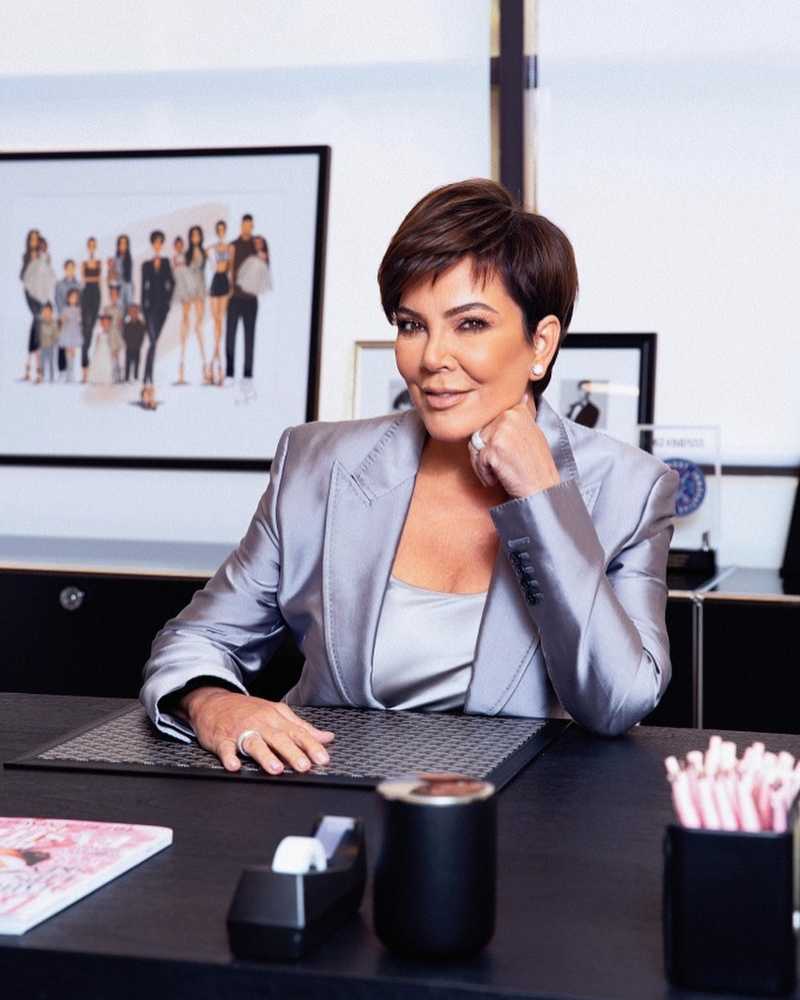
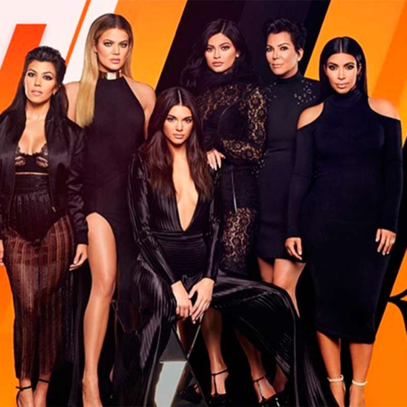
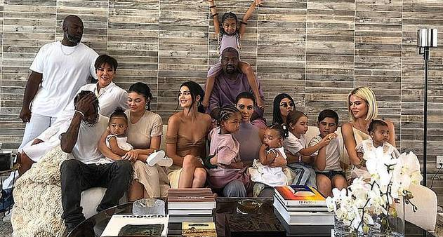

Kris Jenner
Kristen Mary Houghton, mais conhecida como Kris Jenner ou Kris Kardashian(San Diego, 5 de novembro de 1955) é uma empresária, apresentadora, socialite e produtora americana. Ela é mãe de 5 mulheres e um homem sendo a empresária de suas filhas Kourtney Kardashian, Kim Kardashian, Khloé Kardashian, Kendall Jenner e Kylie Jenner. Foi casada com o famoso e renomado advogado Robert Kardashian, que defendeu O. J. Simpson no célebre julgamento, tendo se divorciado em 1991, por dificuldades conjugais. Posteriormente foi casada com Bruce Jenner, que atualmente é a transexual e ex-campeã olímpica Caitlyn Jenner, de quem se divorciou em 2015.

Empresas
Kris Jenner foi nomeada CEO da Kylie Cosmetics em novembro de 2019, quando a Coty Inc. adquiriu uma participação de 51 por cento no negócio por US$600 milhões
Carreira
- Inicialmente Kris e sua filha Kourtney Kardashian haviam aberto uma boutique de roupas infantis, "Smooch".
- Gerencia todos os membros de sua família e se auto entitula, momager.
- Kris e seu ex-marido, Bruce Jenner têm sua própria empresa, Communications Inc.
- Kris apresentou um talk show na FOX, intitulado de Kris.
Televisão
- 2007ː presente: Keeping Up with the Kardashians - (Como ela mesma)
- 2009: Kourtney and Kim Take Miami - (Como ela mesma)
- 2011: Kourtney and Kim Take New York - (Como ela mesma)
- 2013: Kris - (Apresentadora)
- Kourtney and Khloé Take the Hamptons - (Como ela mesma)

Familia
- Filhos: Kylie Jenner, Kim Kardashian, Kendall Jenner, Khloe Kardashian, Kourtney Kardashian, Rob Kardashian
- Netos: Stormi Webster, Dream Kardashian, Mason Dash Disick, True thompson, North West, Reign Aston Disick, Psalm West, Penelope Scotland Disick, Saint West e Chicago West
- Cônjuge:Caitlyn Jenner (de 1991 a 2015), Robert Kardashian (de 1978 a 1991)
- Parceiro: Corey Gamble (desde 2014)

voltar